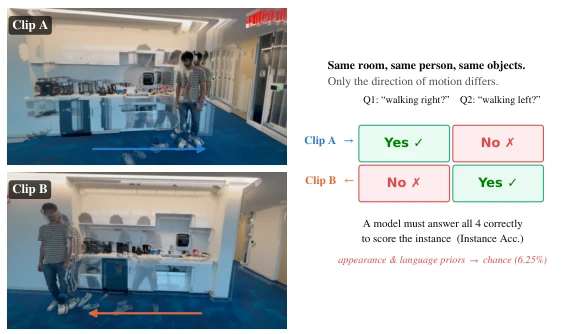
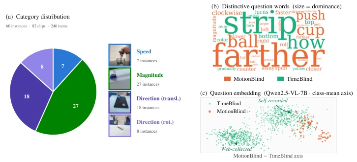
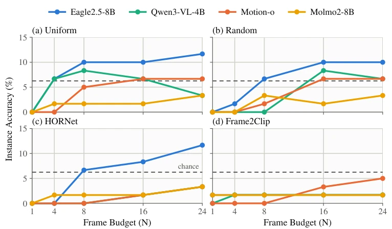
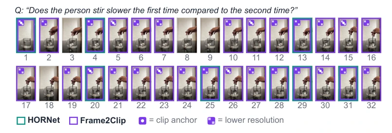
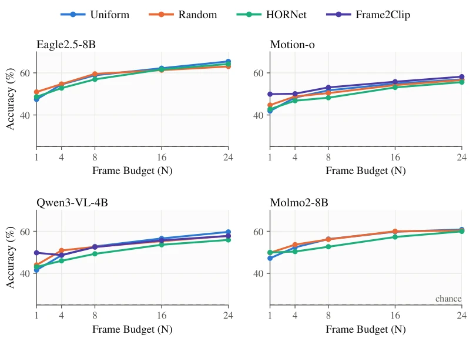
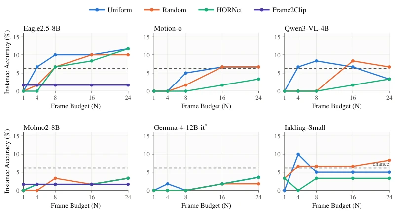
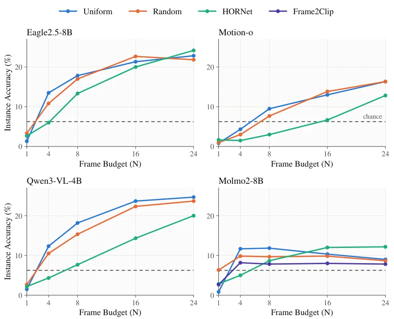

Video large models claim to be the perception frontends of the physical world, but upon testing, they are all "motion blind". MotionBlind directly exposes the underlying flaw: models can recognize furniture in a room, yet cannot distinguish who walks faster. Open-source models collectively perform poorly, approaching random guessing; even top-tier models like Gemini 3.1 Pro still fail on speed judgment. This is not only an evaluation loophole, but also a trust crisis for world models. Relying on such "hallucinations" as reward signals, robots might not even walk steadily. More ironically, increasing frame count or switching to smarter samplers cannot save it, because the model has not learned to perceive motion at all, it just memorized the frames. This illusion of "seeming to understand but actually not" makes world models based on Video-LLM a castle built on sand. The 6.25% random line of the evaluation metric IAcc became the ceiling for open-source models, while closed-source models, although breaking through, still have shortcomings, exposing fundamental defects in current architectures regarding physical perception, described as "visual giants, motion dwarfs".
World models [10] rely on Video-LLMs to predict environment evolution, assuming they can read motion. But existing benchmarks like Video-MME [7] are easily deceived by static appearance and language priors, overestimating temporal capabilities. TimeBlind [13] although introduces a contrast protocol, focuses on semantic temporal rather than physical attributes. MotionBlind aims to fill the gap: under the premise of controlling the scene and invariant objects, only changing speed, amplitude, and direction, forcing the model to truly perceive motion rather than "talking based on pictures". Existing work fails to isolate physical variables, causing models to score via shortcuts, unable to serve as a credible physical supervision source. If unable to distinguish action speed, world models will be unable to accurately predict physical consequences, leading to embodied intelligence failing in real environments, this directly challenges the reliability of current multimodal models as physical priors.

Figure 1: The illusion of motion understanding. A contrastive MotionBlind instance: two self-recorded clips share the same room, person, and objects and differ only in the direction of motion (frames overlaid stop-motion style, faint→solid, to visualize the trajectory). Each clip carries two complementary yes/no questions, and a model scores the instance only if all four items are correct (IAcc). Any strategy that leans on static appearance or language priors (naming the objects, guessing the likely action) is driven to the 6.25% chance floor.
Construct MotionBlind benchmark, 60 contrast instances, 82 self-recorded videos. Adopt 2x2 contrast protocol: two videos differ only in motion attributes, each paired with two complementary yes/no questions, need all correct to count as Instance Accuracy (IAcc), chance rate is only 6.25%. Evaluation dimensions include frame budget (1-24 frames), sampling strategies (uniform, random, HORNet, Frame2Clip), and integrity probes (no video, shuffled). Through strict variable control, strip appearance interference, force model to rely on temporal information. Focus on examining physical attributes (speed, amplitude, direction) rather than semantic states, ensure answers cannot be inferred from single frames or language. Self-recorded videos ensure background consistency, eliminate external noise, making motion the only discriminative signal.

Figure 2: MotionBlind versus TimeBlind. (a) The self-recorded set: 60 contrastive instances (82 clips, 240 items) across three physical-motion characteristics—speed, magnitude, and direction—each with a representative, face- blurred frame. (b) Words most distinctive of each benchmark’s questions (weighted log-odds [16]): MotionBlind turns on manner, magnitude, and direction (faster, farther, closer, clockwise); TimeBlind on appearance and state change (color, turns, top/bottom, gradually). Manner terms appear in 94% of MotionBlind questions versus 36% of TimeBlind’s. (c) The same questions in the evaluated models’ backbone (Qwen2.5-VL-7B, mean-pooled), projected onto the axis between the two benchmarks’ means. The two are linearly separable (AUC 0.97); TimeBlind further splits into a self-
Test 6 open-source and 2 closed-source models. Open-source model IAcc is generally around 6.25%, increasing frame count or optimizing sampling cannot improve. Performance drops to zero when no video or shuffled frames, proving task relies on real temporal. Gemini 3.1 Pro performs best (60%), but still fails in speed category. Comparison with Video-MME shows, in non-contrast tasks models rely on language priors to score, while MotionBlind completely blocks loopholes. Results show, current architecture cannot encode kinematic information, sampling strategies cannot compensate for perception defects. Eagle2.5-8B and other long-context models also show no significant advantage, indicating the problem lies in representation rather than context length.

Figure 3: More frames help, then plateau far below solving. MotionBlind IAcc vs. frame budget 𝑁under each frame-selection strategy: (a) uniform, (b) random, (c) HORNet, (d) Frame2Clip. The dashed line marks chance (6.25%). Every open model saturates by 𝑁=16–24 and plateaus at or below 12% for every selector. In (d), F2C is flat by construction: F2C’s 1 FPS pool saturates on second-scale clips (Sec. 5).

Figure 7: Dynamic frame selection on one MotionBlind clip at a budget of 𝐾= 8. The 32 candidate frames are spaced evenly over the clip; the question is “Does the person stir slower the first time compared to the second time?” (ground truth: no). A colored border marks a frame that a selector returns. HORNet (teal) keeps the 8 frames with the highest keep probability. Frame2Clip (violet) places anchors at the 8 peaks of the SigLIP2 frame–query similarity (white dot) and grows each anchor into a contiguous clip rendered at decreased resolution (checkerboard), so 29 frames cost 7.25 of the 8 native-frame units.

Figure 8: Video-MME accuracy vs. frame budget 𝑁(chance 25%). The same models reach ∼50–65%, so the MotionBlind failure is motion-specific rather than general incompetence. Eagle2.5-8B and Molmo2-8B are from our runs; Motion-o and Qwen3-VL-4B also include a Frame2Clip curve.
其他图片Other Figures

Figure 5: MotionBlind IAcc vs. frame budget 𝑁, one line per frame selector. Every open model plateaus in the low teens or below and no selector escapes the floor. ∗Gemma-4-12B-it is on the MotionBlind-82 cache subset (not 1:1 comparable).

Figure 6: TimeBlind IAcc vs. frame budget 𝑁(same models and selectors). Accuracy rises with 𝑁but saturates well short of the human ceiling; Molmo2-8B adds a Frame2Clip curve.